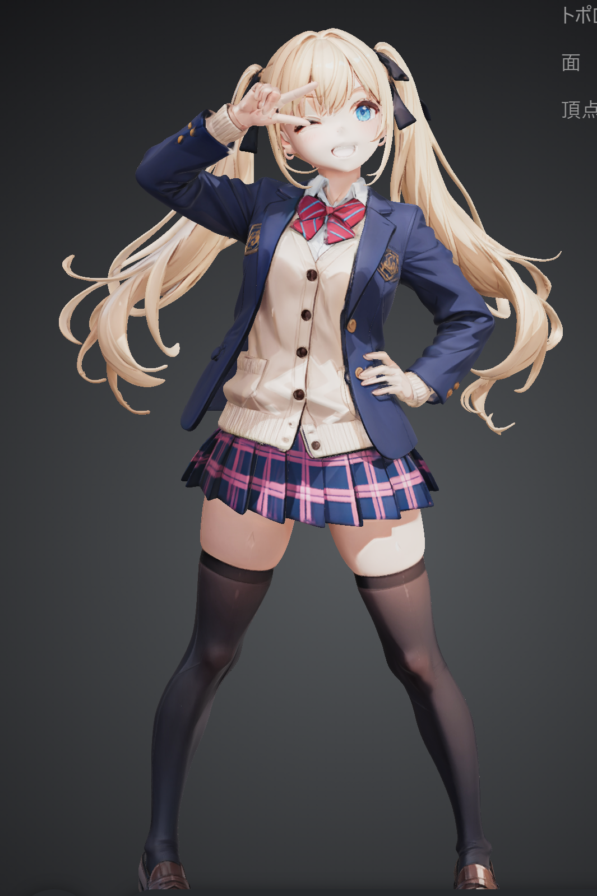
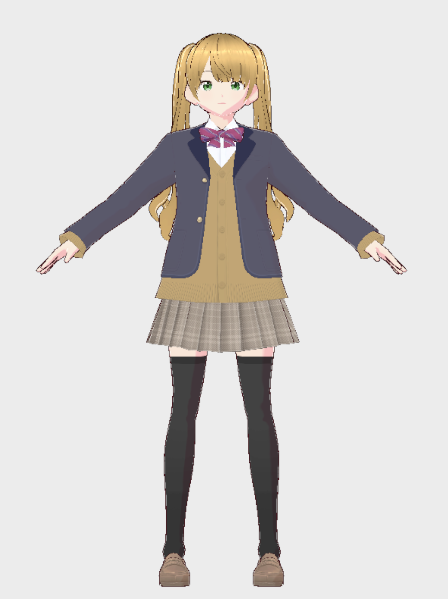
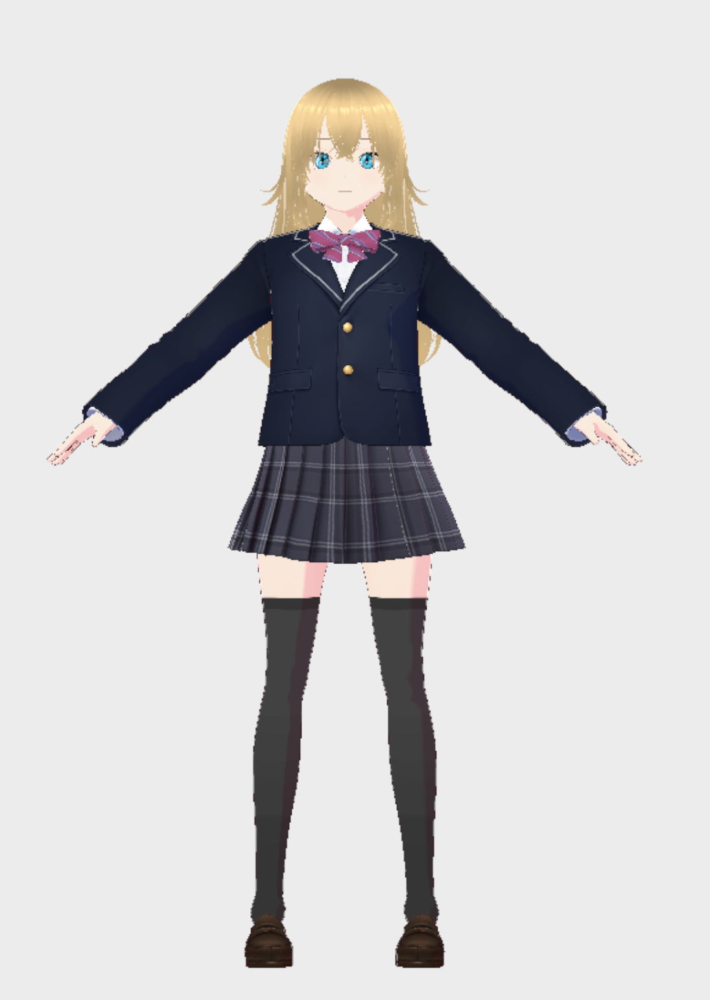
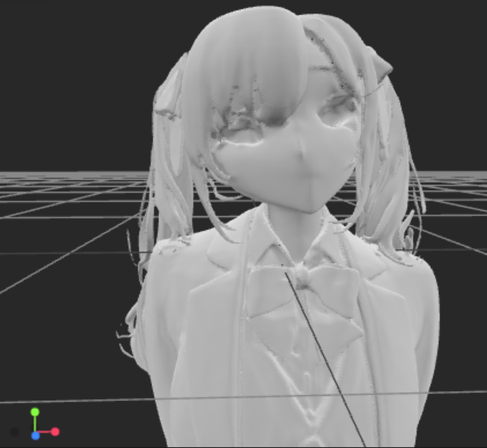

■はじめに
美桜ちゃんを動かしたいなー、というのは前からずっと思ってた。
動けばダンス動画も作れるし、ゲームにも出せる。 アクションゲームで敵をばったばた倒す美桜ちゃんが作れる！
でもさ～、3Dって敷居が高いじゃん？ ソフトは専門的だし、知識も要るし。 Stable Diffusionでイラストは作れるようにはなったよ。 でも2次元の話じゃん？ 3Dは作れんて。 だから長いこと、手が出なかった。
そんなある日、Xを眺めてたら「きゃらくる」というのを見つけた。 自分の描いた絵から3Dキャラクターが作れるらしい。
お、これは！……と思ったけど、手順を見たら頭と体の絵を何枚も用意して、まとめて読み込ませてどうのこうの。 ソフトもいっぱい入れて、Tripoも使って（多分有料じゃないとキレイに作れないだろ）、Codexとかも必要？ これも有料版じゃないとキツイのかな？ うん、めんどくさそう！ そっ閉じｗ
他に無料で、もっと楽にできないかな？
ここから迷走が始まるのであるｗ
■迷走1：Tripo
まず試したのは、画像1枚から3Dが作れるTripo。 Xの広告でよく見るし、その広告では綺麗な3Dキャラが載ってるし。 やってみっか！

出てきたのがこれ。 まぁ、出来てるっちゃ出来てるよ。 元のイラストの通り、ウィンクにピースでポーズも決まってるし、ツインテールも制服の色分けも一通り入ってる。
でも近くで見ると怪しい所が次々出てくる。 顔があんまり可愛くない。 ブレザーのエンブレムが左右両方に付いてるし、腕のボタンはおかしいし、バランスも悪い。
クオリティに満足できない。 却下。
■迷走2：VRoid
次は無料でキャラが作れる定番、VRoid。 ……なんだけど、VRoidには前科がある。
何年か前、自分で触って作ってみたことがある。

一応美桜ちゃんとも言えなくない特徴は入れてる。 だが、顔もいかにもVRoidの顔。 画風が圧倒的に美桜ちゃんにはならなかった。
で、今回。 Xで「VRoidとCodexでいい感じに出来る」というのを見かけて、Codexに触らせてみた。

結果、何年か前の自分作より酷かった。 ツインテールが消えてストレートロングになってるし、カーディガンも無いし、スカートはグレーのチェック。 作り自体は整ってるのに、美桜ちゃんの要素ごと抜け落ちて別人になった。
VRoidは可愛い女の子は作れる。 でも、どうやっても美桜ちゃんにはならない。 却下。
■迷走3：Hunyuan 2.1
じゃあローカル生成はどうだと、Hunyuan 2.1を自分のPCで回してみた。 無料で回し放題なのは魅力。

出てきたのは「邪神」だったｗ
却下。
■迷走4：Idol
これは試してすらいない。 Museに相談して、俺の意図には合わないって話になった。 出力がガウシアンスプラットとかいうやつで、メッシュも骨（リグ）も無いから動かせないんだよね。
却下。
■結局、きゃらくる
というわけで、無料で楽な道は全滅した。
一周回って、保留してたきゃらくるに戻ってきた。 よく見たら、Museと相談しながらなら出来そうかなって。
- 頭と体を分けて作れる
- 使う絵は全部自分で用意して持ち込む（生成任せにしない）
- 最後はBlenderで直して、VRMで出せる
自分が納得のいく美桜ちゃんを作るのは、むしろこのくらいは必要なのかも？ 結局、最初の段階でダメだったTripoを使うことになりそうだけど、Xで見かけたものは可愛く出来てたし、何とかなるかな？
2026年11月14日、きゃらくるで製作開始！
次回は素材作り編の予定。
（つづく）